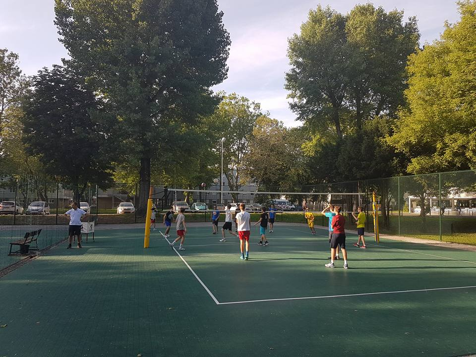
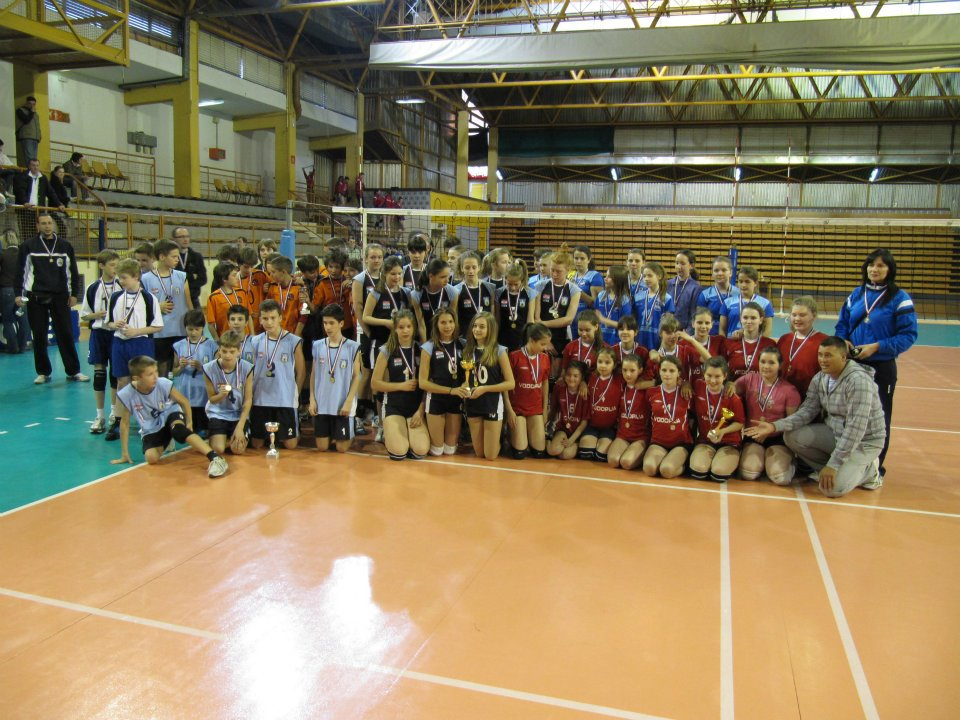
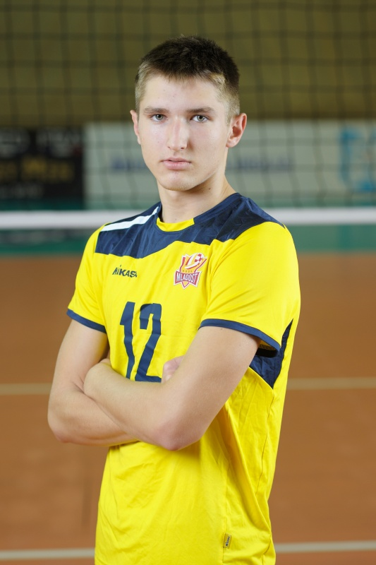

Ja sam Andrej Peterlin imam 20 god, imam tri brata i sestru,
cijeli zivot sam u sportu, treniram odbojku već 10 godina i igram
u prvoj hrvatskoj ligi. Na ovome faksu se nadam naučiti puno novih
stvari; najvise vezano uz multimediju. zanima me rad u programima
za obradu slika vektorsku grafiku i video produkciju.

Trening odbojke

Dodjela nagrada 2012

Moja slikaPodcast koji je vodio moj brat, a ja uredivao